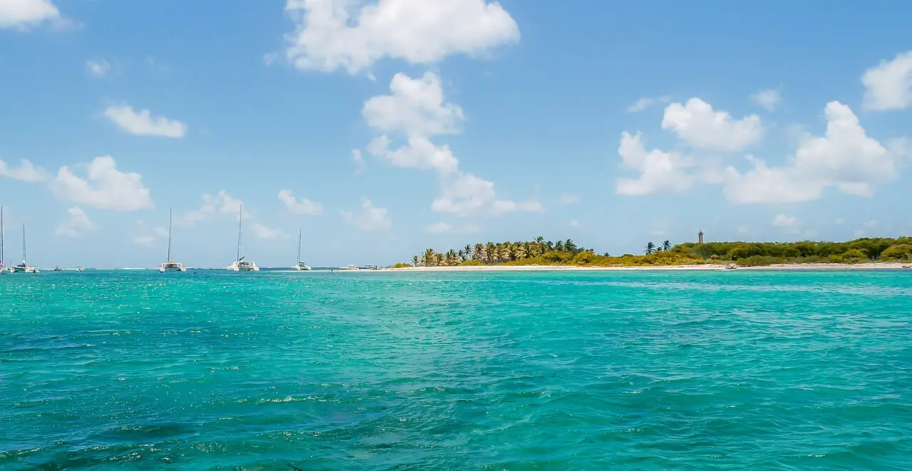

Îles de la Petite-Terre
La Désirade, Guadeloupe · snorkeling, baignade

Deux îlots inhabités classés en réserve naturelle, séparés par un lagon turquoise, au large de la Désirade. Le snorkeling dans le lagon et la rencontre des iguanes sur la plage valent la traversée.
- Lieu
- La Désirade, Guadeloupe
- Niveau
- Débutant
- Activités
- snorkeling, baignade
- Type d'eau
- Mer / océan
- Coordonnées
- 16.17, -61.12 (position approximative du secteur)
Dangers à connaître
- Traversée en mer ouverte, souvent agitée.
- Réserve naturelle : zones fermées, aucun prélèvement.
- Très peu d’ombre.
Le conseil d'Ocean Buddy
L’accès se fait uniquement avec les opérateurs autorisés depuis Saint-François : réserve à l’avance et respecte les zones ouvertes.
Ouvrir dans Ocean Buddy Télécharger sur l'App Store
Source : Fiche Ocean Buddy · septembre 2026 · à vérifier localement.